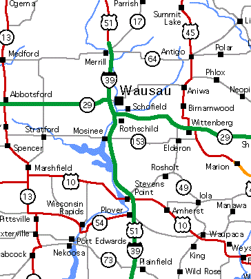

It is my passion to develop sites and software, but a big part of my job is solving problems. Take a look at my work and contact me if you're looking for some professional help.
I was born and raised in Wausau, WI; which is a small town located in central Wisconsin.
